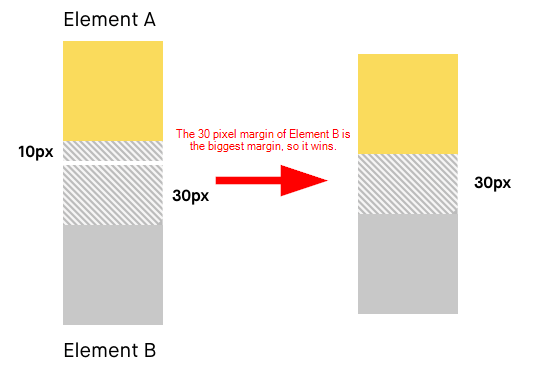

Answers to CSS Questions
What is a box model in CSS?
The box model in CSS is the design and layout of elements on a web page. It includes the content area, padding, border, and margin around an element.
The box-sizing property in CSS allows you to define how the total width and height of an element are calculated.
What is a “clearfix hack” and when does it need to be applied?
A "clearfix hack" is a technique that allows to clear floats in CSS to make sure that a container expands to contain its floated children. It is applied when a parent element contains floated child elements and doesn't have a specified height.
What is a “margin collapse” and use cases for margin: auto and negative margin values?
Margin collapse occurs when the top and bottom margins of neighbour elements overlay, collapsing into a single margin. The use cases for margin: auto include centering an element horizontally inside its container. Negative margin values are used to create overlaying elements or set spacing between elements.
Problem with achieving Holy Grail layout and modern solutions
The problem with achieving the Holy Grail layout in the past was the difficulty in creating a layout with a header, footer, and three columns of content with equal heights. Modern solutions involve using flexbox or CSS grid layouts to create complex and responsive designs more easily.